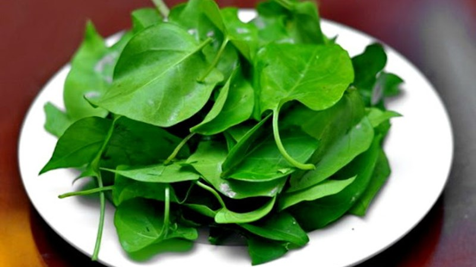
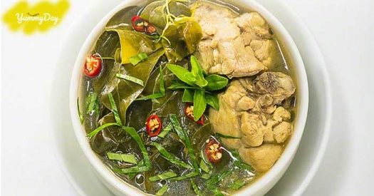

Canh Chua Lá Giang
Là một món canh cực ngon của người Đồng Nai. Món ăn có vị chua, thanh mát và dễ chịu, giải nhiệt cho mùa hè được nhiều người yêu thích.

Lá giang – thứ lá cực tốt cho sức khỏe người ăn
Lá giang là loại lá mà theo đông y rất tốt cho sức khỏe. Vì lá có khả năng thanh nhiệt, giải độc và tính kháng sinh cao. Đối với những người bị chứng đầy hơi, chướng bụng ăn uống khó tiêu có thể sử dụng loại lá này. Nó giúp đường ruột bạn tốt hơn, kích thích tiêu hóa tạo cảm giác ăn ngon miệng hơn.
Mùa hè là thời điểm lá giang phát triển nhanh và cực mạnh. Lá dễ sống, dễ kết hợp được nhiều loại thực phẩm khác nhau. Có thể là thịt hoặc hải sản đều cho món canh cực kỳ ngon và ngọt. Người dân Đồng Nai cực kỳ yêu thích món ăn này. Với món canh chua lá giang được nấu với cá cơm khô, dù dân giã nhưng cực kỳ tốn cơm. Món ăn cho sức khỏe tốt, giải nhiệt cực kỳ hiệu quả vào mùa hè.

Canh chua lá giang – Đặc sản cho ngày nóng ở Đồng Nai
Canh chua lá giang Đồng Nai được nấu khá đơn giản. Nó thường được kết hợp với cá cơm khô cực kỳ ngon. Cá cơm khô được kiếm ở chợ cực nhiều và đơn giản. Nấu ngon nhất vẫn là cá cơm ngần. Mua về mang đi rửa sạch. Khi nấu cần thiết phải ngâm nước sôi khoảng 5 phút trước. Mục đích là để cá mềm ra. Lá giang được nhặt và rửa sạch. Trong khi làm, bắc nồi nước lên đun đến khi sôi thì cho cá vào nấu khoảng 5-10 phút đun sôi. Khi cá chín mềm mềm thì cho lá giang vào nấu cùng.

Để có được món ăn ngon đúng điệu, điều cần chú ý cách nấu canh chua lá giang. Trước khi nấu, lá giang cần được vo nát chút ra để nấu nhừ mà không bị chua quá. Quá trình nấu, điều chỉnh độ mặn nhạt của món canh cũng cực kỳ quan trọng. Vì nếu nhiều muốn món ăn sẽ bị mặn, không còn độ chua hay ngọt của cá nữa. Nếu nhạt quá thì nó cũng không thấy vị.
Món ăn cực kỳ phù hợp với mùa hè. Khi thời tiết nắng nóng oi bục, về nhà mà có bát canh chua thì thật tuyệt. Món ăn được ăn thêm với muối ớt rừng cho tăng thêm độ cay nồng. Vì thế, đừng bỏ qua món ăn này cho gia đình trong hè năm nay. Hãy tận hưởng món canh chua lá giang – đặc sản Đồng Nai với vị chua thanh, dịu nhẹ, giải nhiệt cực tốt. Đây sẽ là một gợi ý tuyệt vời vào mùa hè, giúp không bị ngán cơm.